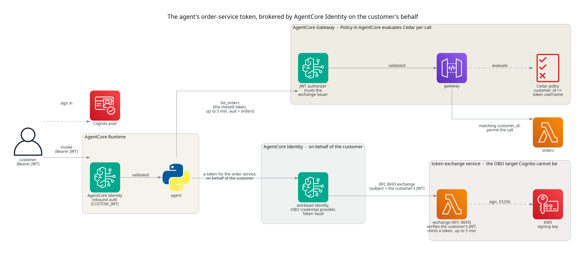
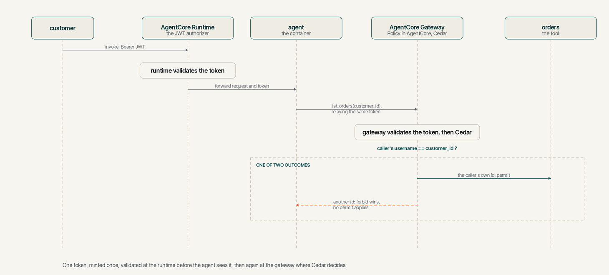
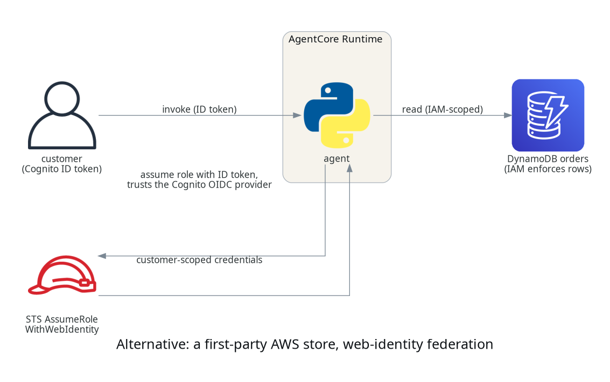
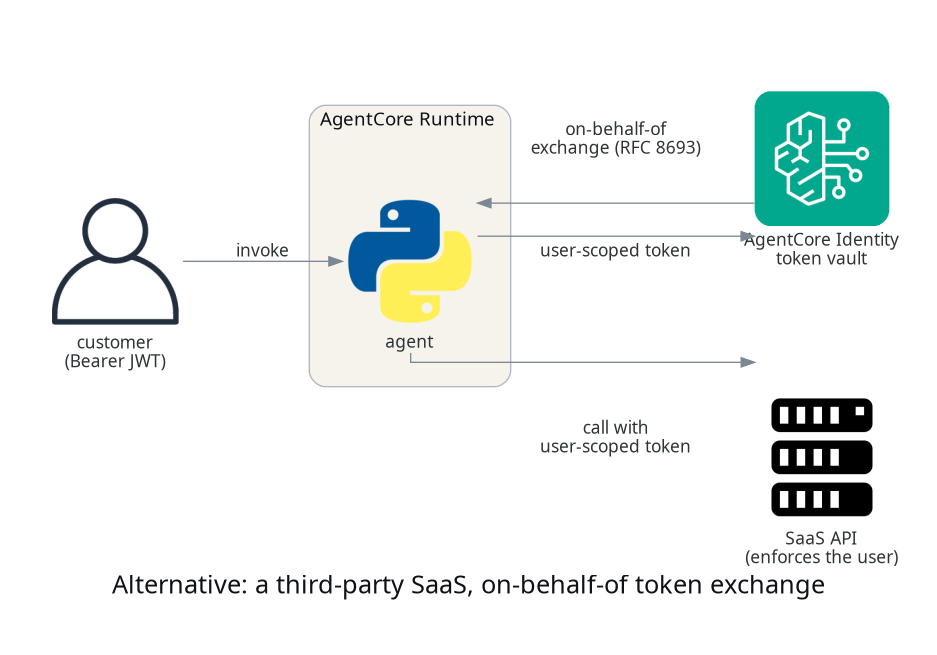

Knowing who your agent is acting for, with AgentCore Identity
TL;DR;
How to establish who a customer is on the way into an agent with AgentCore Identity, and then enforce that identity on every invocation of the orders gateway tool with Policy in AgentCore, so a Cedar policy at the gateway refuses any call outside the caller's own orders, before the tool runs and outside the agent's code.
SOURCE CODE - All code for this post is available at: https://github.com/levantar-ai/demos/tree/main/agentcore/05-identity
Longer version
This series is building one thing, the order support agent for Brightwell, a small online retailer of outdoor kit that ships with DPD and Royal Mail. Posts 01 to 04 gave it a runtime, a tool that looks orders up, memory and a sandbox. None of them knew who was asking, and post 02 said so at the time, that the gateway established a legitimate client was calling, not that it was entitled to a particular order.
Closing that gap safely is the whole of this post, and it matters because identity is where agent security is won or lost. The tempting fix, giving the agent a broad credential and filtering results in its own code, is the one AWS's Well-Architected Agentic AI Lens tells you not to reach for.
The traditional approach of granting the agent broad credentials and relying on application-level filtering (such as adding WHERE clauses to queries) creates a single point of failure. A more resilient design moves authorization enforcement out of the agent's application code and into the infrastructure layer wherever possible.
That is AGENTSEC03. The reason it matters more for an agent than for ordinary code is the next post, where a model, not deterministic code, chooses the arguments to a tool. If the only thing keeping a caller to their own orders is the agent passing the right id, a model that can be talked into passing a different one has just read someone else's account.
So this post does two things. AgentCore Identity establishes the customer on the way in, and Policy in AgentCore enforces that customer on the tool behind the gateway. The enforcement point is deliberately not the agent. The orders tool is the one behind the gateway, so it is the one this post puts under Cedar; the memory and sandbox carried forward from posts 03 and 04 are called directly and are still scoped in the agent code, which is the next thing you would move behind the same pattern.

1 - Inbound, the runtime and the gateway check the customer
The Cognito pool from post 02 keeps a public client for customers, who sign in with a password and get an access token. The runtime validates that token before the agent sees the request and forwards it. What is new is that the gateway now validates the same customer token rather than a machine token the agent obtained through AgentCore Identity:
authorizer_configuration {
custom_jwt_authorizer {
discovery_url = local.discovery_url
allowed_clients = [aws_cognito_user_pool_client.customers.id]
}
}
The access token this demo's sign-in produces carries client_id and
username but no aud, so the gateway validates it by allowed_clients
and no audience is set. The caller the gateway establishes from that token
is the customer, and their username is Brightwell's customer id. An ID token
puts the client in aud and carries no client_id, so the JWT authorizer
refuses it before the agent or Cedar sees it, which a live check confirmed
with 401 Claim 'client_id' value mismatch. The handler's token_use check
is a second line behind that. That username is the identity the next section
authorises against.
NOTE: this is the same pool for customer accounts that Brightwell already controls. Only an admin creates users, so a username is a real customer id and not something an attacker can register. The policy matches on the
username, while the Cedar principal is the immutablesub, so it also assumes Brightwell never reassigns a customer id to a different person; bind the data and the rule tosubif that assumption does not hold.authorizer_typeis immutable, so a gateway that starts on the wrong client has to be replaced.
2 - The policy engine and the Cedar rules
Policy in AgentCore is a policy engine attached to the gateway. It holds Cedar policies and evaluates them on every tool call. AWS states the model plainly:
For every tool invocation, the policy engine evaluates all applicable policies against the request to determine whether to allow or deny access. The engine enforces default-deny and forbid-wins semantics automatically.
That is from the Policy core concepts, which also says where the principal and its attributes come from:
When a AgentCore Gateway uses OAuth authorization, the principal is created from the JWT token's
subclaim. OAuth principals support tags that contain JWT claims such as username, scope, role, etc.
So the caller's sub is the Cedar principal, the verified username claim
is a principal tag, and the tool's arguments arrive as context.input. A
permit expresses the allow, a customer may list only their own orders:
resource "aws_bedrockagentcore_policy" "own_orders" {
name = "own_orders_only"
policy_engine_id = aws_bedrockagentcore_policy_engine.orders.policy_engine_id
definition {
cedar {
statement = <<-CEDAR
permit(
principal is AgentCore::OAuthUser,
action == AgentCore::Action::"orders___list_orders",
resource == AgentCore::Gateway::"${aws_bedrockagentcore_gateway.orders.gateway_arn}"
) when {
principal.hasTag("username") &&
principal.getTag("username") == context.input.customer_id
};
CEDAR
}
}
}
The permit only fires when the customer_id argument equals the caller's
own username. Because Cedar denies by default, a call for any other customer
matches no permit and is refused. The check is on the token's claim, which
the gateway verified, so it is not something the agent or a model can talk
its way around by choosing a different argument.
Cedar permits are additive, so a broad permit added in a later post could
otherwise re-open this. A forbid, which wins over any permit, keeps the
invariant for this action on this gateway, it denies a mismatched customer
id even if a later permit would match:
forbid(
principal is AgentCore::OAuthUser,
action == AgentCore::Action::"orders___list_orders",
resource == AgentCore::Gateway::"${aws_bedrockagentcore_gateway.orders.gateway_arn}"
) unless {
principal.hasTag("username") &&
principal.getTag("username") == context.input.customer_id
};
NOTE: a tool-specific action must name a specific gateway resource, not a wildcard, or
CreatePolicyrefuses the statement. The gateway's role also needs the policy-engine read actions, scoped to the one engine, and the two evaluate actions,AuthorizeActionandPartiallyAuthorizeActions, which do not support resource-level scoping and so are granted on*. The gateway still evaluates only the engine its configuration points at.
3 - The agent carries the customer's token, not its own credential
Since post 02 the agent asked AgentCore Identity for a machine token to call
the gateway, through GetResourceOauth2Token against an OAuth2 credential
provider. That path and its provider are gone. The agent relays the
customer's own token, the one the runtime handed it, so it has no gateway
credential of its own:
def list_orders(customer_id, customer_token):
return asyncio.run(
_call_tool("list_orders", {"customer_id": customer_id}, customer_token)
)
This is the shape AWS's Well-Architected lens asks for, the user's identity travelling as claims rather than the agent standing in for the user:
When an agent acts on behalf of a user, the user context propagates as signed token claims through the call chain without the agent ever assuming the user's credentials.
Be precise about what this buys. There is no token exchange here, the agent
relays the customer's own access token unchanged. That token is still a
credential, short-lived because a Cognito access token expires within the
hour, and the agent handles it, so treat it as sensitive and never log or
store it. What the gateway guarantees is that the customer_id argument
matches the identity in that token, so a model or agent that chooses a
mismatched id is denied. It is
not a defence against an agent that has somehow obtained another customer's
token, that is a different threat handled by not leaking tokens in the first
place. Within its scope, the check holds even when the agent's own logic is
wrong, which is the point of moving it out of the agent.
4 - Running it
The whole path, one token minted at sign-in and checked twice, at the runtime and again at the gateway where Cedar decides:

A customer signs in and calls the agent, and the happy path is unremarkable,
list my orders returns their orders. The interesting call is the one that
should not work. Asking the gateway directly, with a customer's own token,
for another customer's orders:
GATEWAY_URL=... TOKEN=<c-1000's token> python3 probe_gateway.py c-1000
# allowed: 7 orders for c-1000
GATEWAY_URL=... TOKEN=<c-1000's token> python3 probe_gateway.py c-1001
# denied by the gateway: Tool Execution Denied: Tool call not allowed due to
# policy enforcement [Policy evaluation denied due to deny_other_customers_orders].
The same token that reads c-1000's orders cannot read c-1001's, because no
permit matches a customer_id that is not the caller's and the forbid
guard denies it outright, which is what the message names. The agent's own logic did not have to be
correct for that call to be refused. This is what AWS means when it explains
why Policy in AgentCore sits at the gateway:
Centralizing authorization outside both gives you a single checkpoint the LLM can't circumvent; one that's auditable and can be verified independently of the application code.
NOTE: the engine takes a
LOG_ONLYmode that records what it would decide but lets the call run, so a denied call still returns the data. That is fail-open, useful only against synthetic data in an isolated account to confirm the principal, its tags and the decision look right before you turn onENFORCE. It is not a safe preliminary against real customer data. This demo's Terraform carries apolicy_modevariable, defaulting toENFORCE.
5 - When it is not a gateway tool
Policy at the gateway is the answer when the tool is behind the gateway, which is where this series has put its tools since post 02. Two other shapes come up, and both keep authorisation out of the agent.
For a first-party AWS store such as DynamoDB, you do not need a policy engine
at all. Register the Cognito pool as an IAM OIDC provider, take the
customer's ID token rather than the access token this demo uses, exchange it
for temporary credentials with STS AssumeRoleWithWebIdentity, and scope
those credentials to the customer. IAM does not filter arbitrary rows, so
the table has to be keyed on a stable identity from the token, the immutable
sub, with the role policy conditioning dynamodb:LeadingKeys on it. That
binding is in the signed token, so the agent cannot widen it. The role's
trust policy has to pin the issuer and the app client through the ID token's
aud, and its permissions have to leave out Scan and anything else
LeadingKeys cannot constrain. This is the shape, and it re-keys the data on
sub and changes the inbound token, so it is a different contract from this
post, not a drop-in.

For a third-party SaaS that IAM cannot reach, AgentCore Identity carries the delegation itself, through on-behalf-of token exchange. The agent exchanges the customer's inbound token for a user-scoped token the SaaS accepts, and the SaaS enforces its own sharing rules. It needs a provider that supports OAuth token exchange, RFC 8693 or the JWT-bearer profile RFC 7523, such as Salesforce or Microsoft Entra, which Cognito is not. So it is the answer for a third-party resource, not for a first-party Cognito tool.

6 - What it does not solve, and where it fits
Handing an autonomous agent a bearer token is not free of risk, and it is worth saying plainly which risks this pattern answers, which it narrows, and which it leaves to you.
A model asking for the wrong customer is the one the gateway answers outright. A prompt injection, or a model that simply gets it wrong, that makes the agent request another customer's id is denied by Cedar before the tool runs. That is the whole reason the check lives at the gateway and not in the agent.
The token is a bearer credential, so anyone who obtains it can replay it until it expires, and there is no proof of possession. The demo sends it only over HTTPS and does not deliberately persist it, which lowers the chance of disclosure, and a Cognito access token expires within the hour, which is the only thing that actually bounds how long a stolen one is useful. None of that makes a leaked token harmless, so it stays sensitive and the agent's code is part of the trust boundary while it handles one.
Attribution is where this pattern can be weaker than the on-behalf-of
alternative. The gateway authenticates the customer, and the Lambda receives
only the policy-approved customer_id and an invocation from the gateway
role, so nothing on the tool side separates the agent from the customer. An
on-behalf-of exchange can give a downstream both the user and an actor
identity, but only when the authorisation server puts an actor or client
claim in the token and the downstream records it. RFC 8693 defines the act
claim and does not require it, and RFC 7523 does not define it at all, so
verify the token a provider actually issues. Where that trail matters, the
exchange is the place to look.
And Cedar constrains which customer, not what the agent does with the data once it comes back. Narrow tools reduce that exposure, and the guardrails, tracing and evals that later posts add help prevent or detect misuse, but a hard boundary on returned data also needs output and network-egress controls suited to the data, the more so with the runtime on a public network.
The three shapes side by side.
| Cedar at the gateway (this post) | On-behalf-of exchange | Web-identity to IAM | |
|---|---|---|---|
| Enforced at | the gateway, on the customer's token | the SaaS, on an exchanged token | IAM, on scoped credentials |
| Carries the agent's identity | no | provider-dependent, verify | no |
| Backend it fits | a tool behind the gateway | a third-party SaaS | a first-party AWS store |
| Issuer it needs | a compatible JWT issuer, Cognito here | one that supports RFC 8693 or 7523 | Cognito as an OIDC provider |
| Extra moving parts | a policy engine and a Cedar rule | a credential provider and the exchange | an OIDC role and its policy |
This pattern fits a first-party tool behind the gateway, a Cognito login, and the customer's own data as the boundary, which is where this series has been since post 02. For the orders tool it implements the Well-Architected lens on tool authorisation, AGENTSEC02, the gateway and its policy engine authorise every invocation against a declarative policy before the Lambda runs, and it follows AGENTSEC03 by propagating the customer's identity to that enforcement point rather than giving the agent broad access. Where it stops short of that item's highest bar is that the agent handles the customer's token rather than a minted per-hop one. An on-behalf-of exchange narrows that, replacing the relayed token downstream with a provider-issued, audience-scoped one, though the agent still handles a bearer token, and keeping the customer's token away from the agent entirely means exchanging it before it ever reaches the agent.
On-behalf-of is the natural way to harden this further, and this post does not build it for a concrete reason. Cognito does not implement RFC 8693 token exchange, so there is no exchange grant to ask it for, and as section 5 noted it cannot be the exchange target. The exchange needs another authorisation server, and a later post stands up a self-hosted one, though a managed provider that supports the exchange profile would do as well. That server validates the customer and the agent, then deliberately mints a shorter-lived token scoped to the gateway and, where it chooses to, an actor claim naming the agent. None of that comes from the exchange for free, the audience, the lifetime and the actor claim are the server's to mint and the gateway's to check. AgentCore Identity requests that token through its on-behalf-of flow and hands it to the agent. So a later post adds the audit trail and the audience-scoped token this design does without, on top of the gateway and the Cedar policy here. Relaying the token with Cedar enforcing the customer is the right foundation to build it on, and a sound design in its own right for a first-party tool where the customer's own data is the boundary.
Conclusion
The agent now acts for a known customer, and for the orders tool it is the
infrastructure that keeps it there. AgentCore Identity establishes the
customer at the runtime and the gateway, Policy in AgentCore evaluates a
Cedar policy on every call to that tool, and a request for anyone else's
orders is denied by default before the tool runs. The agent has no gateway
credential of its own, and for that tool the choice of customer_id is no
longer the only thing standing between a caller and someone else's account.
The relay is still trusted to present the current caller's token, and the
memory and sandbox paths are still scoped in the agent, so moving those
behind the same gateway and policy is how you would finish the job.
That is the precondition for the next post, where a model is handed the tools this series has built and lets it choose the arguments, including the customer id, and the reason its orders access stays safe is that the gateway, not the model, decides whose orders come back. A later post strengthens the delegation further with the on-behalf-of exchange, where an authorisation server mints a token scoped to the gateway that can name both the customer and the agent, so the agent presents that rather than relaying the customer's own.
References:
- https://github.com/levantar-ai/demos/tree/main/agentcore/05-identity
- https://docs.aws.amazon.com/wellarchitected/latest/agentic-ai-lens/agentsec02-bp01.html
- https://docs.aws.amazon.com/wellarchitected/latest/agentic-ai-lens/agentsec03.html
- https://docs.aws.amazon.com/bedrock-agentcore/latest/devguide/policy-core-concepts.html
- https://docs.aws.amazon.com/bedrock-agentcore/latest/devguide/policy-understanding-cedar.html